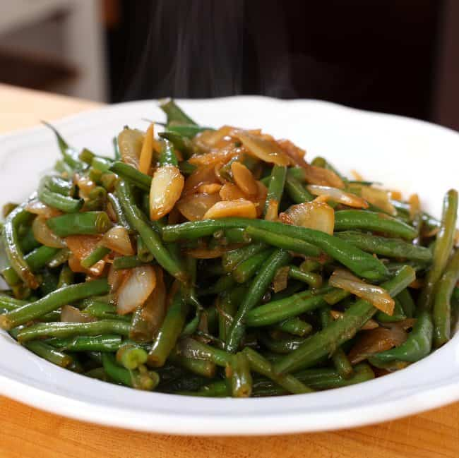
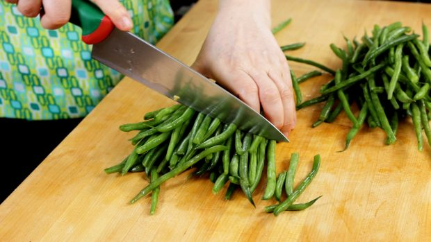
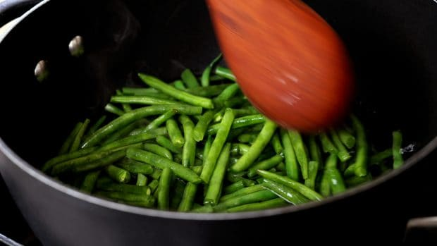
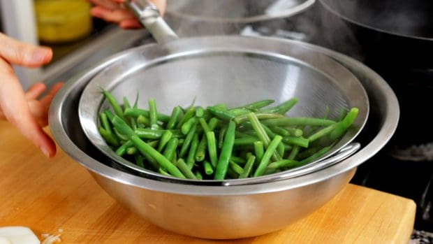
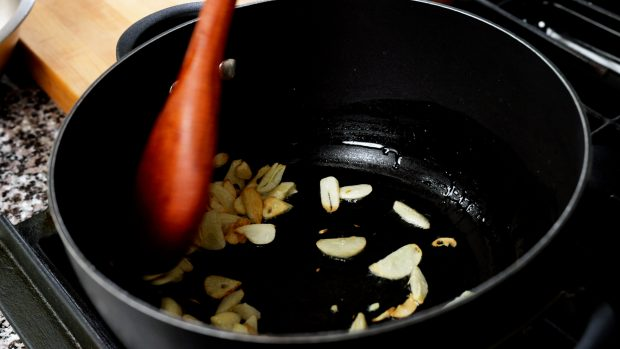
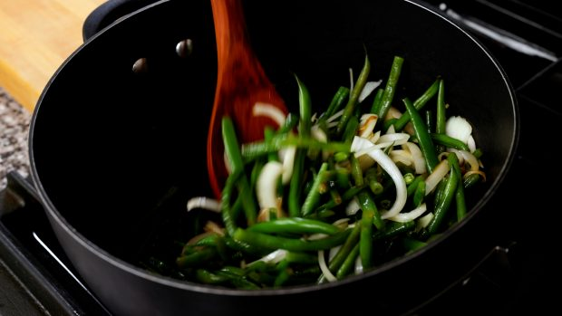

Garlic green beans

Description
For my first recipe of 2022 I chose these garlic green beans (Kkeopjilkong maneul bokkeum: 껍질콩 마늘 볶음), something that I always make and that just happen to be healthy. When I need some green stuff as a side dish I often choose this or sigeumchi-namul. I love the texture of well-cooked green beans stir fried with onions and lots of garlic. It’s a great side dish for rice.
When I lived in Korea green beans was an unusual ingredient, but these days it’s a different story and many Koreans cook with them. Green beans are known as being full of vitamins, nutrients and fiber. They are also full of antioxidants and good for your heart and gut, low in calories and aid in a healthy pregnancy! So when I cook this dish I love the taste and texture and after eating it I feel very healthy.
I usually make 2 pounds’ worth and eat a lot of them, but for the sake of this recipe I am making it with one pound. If you find you love them as much as I do, double the recipe next time!
Ingredients (Serves 4)
- 1 pound of trimmed green beans, washed, drained, and halved crosswise
- 1 teaspoon kosher salt
- 8 to 12 garlic cloves, sliced thinly
- 1 small onion (½ cup), sliced
- 1 tablespoon vegetable oil
- 3 tablespoons soy sauce
- 1 tablespoon toasted sesame oil

Steps
- Bring 3 cups of water in a large pot to boil over medium high heat. Stir in the salt.

- Add the beans and cook for 7 minutes, stirring with a wooden spoon to cook evenly.

- Remove from the heat. Drain the beans through a strainer over a bowl. Reserve ½ cup of the bean cooked water for later use.
- Put the same pot back on the stove. Turn on the heat to medium high.
- Add the vegetable oil and garlic, stirring with a wooden spoon for 1 minute, until the garlic start to get a little crispy and light brown.

- Add the beans, the reserved ½ cup bean cooked water, soy sauce, and onion.
- Cook for about 5 to 6 minutes, occasionally turning and flipping with the wooden spoon, until the soy sauce mixture boils down and the beans turn savory and tender.

- Remove from the heat and stir in sesame oil.
- Transfer to a serving bowl or plate and serve with rice. The leftovers can be refrigerated up to 1 week.